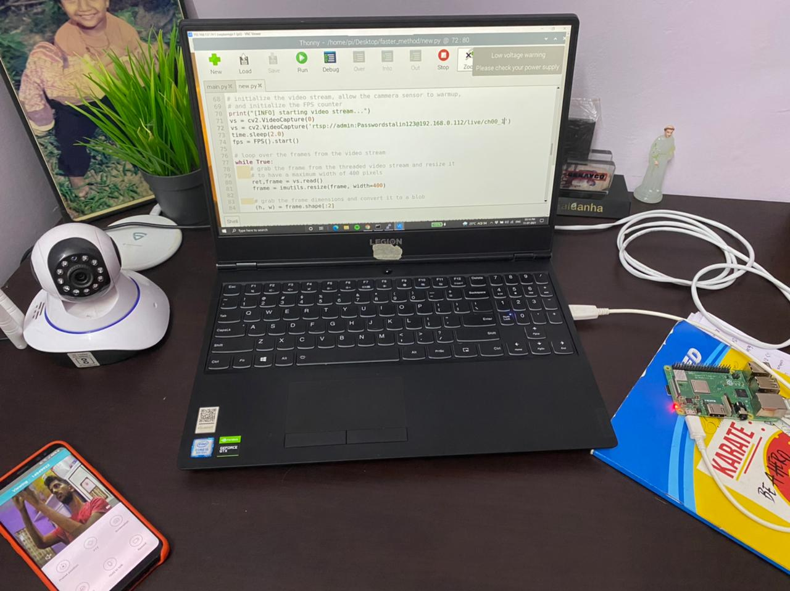

my Project



Crop raiding has become one of the major loss most of the farmers face. Thefts have been increased to the considerable extent . There are cases where many farmers have committed suicide after increased cost of cultivation, low production and not being able to return the money borrowed from the private vendors. There are devices which are used to chase away the animals which have entered the farm. But most of those are causing harm to the animals ,while other systems are inefficient because of the usage of the sensors which cannot withstand heat. Despite developments in the technologies, there’s no adequate system which is both efficient and affordable. All these various factors serve as motivation for this project to design a compact system, low cost and affordable for the farmers. Thus the project aims to focus on developing a low-cost smart device that can help in monitoring, alerting and keeping track of the object entering the farm. Considering the shortcomings of these existing practices, we have come up with the solution that detects the object entering the farm taking into consideration the frames from the continuous video streaming. Raspberry pi is a micro controller. Deep learning techniques are used for image processing. Single shot detection enables detection of multiple objects in the frame at a single shot. Python based code is used to send the message to the owner of the land regarding the detection of object. A part of the security system has been designed in our project which is low power consuming, efficient, compact and affordable for all farmers. The future work involved here is using more efficient and high pixelated cameras or thermal cameras for high resolution and accurate values and the use of advanced cloud platforms providing additional facilities and ease of access. Attempts can be made to merge the above mentioned monitoring device and smart animal intrusion system.